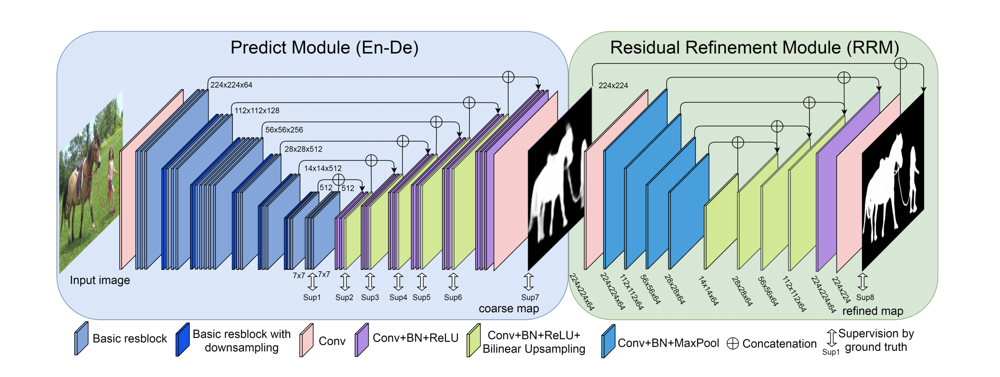
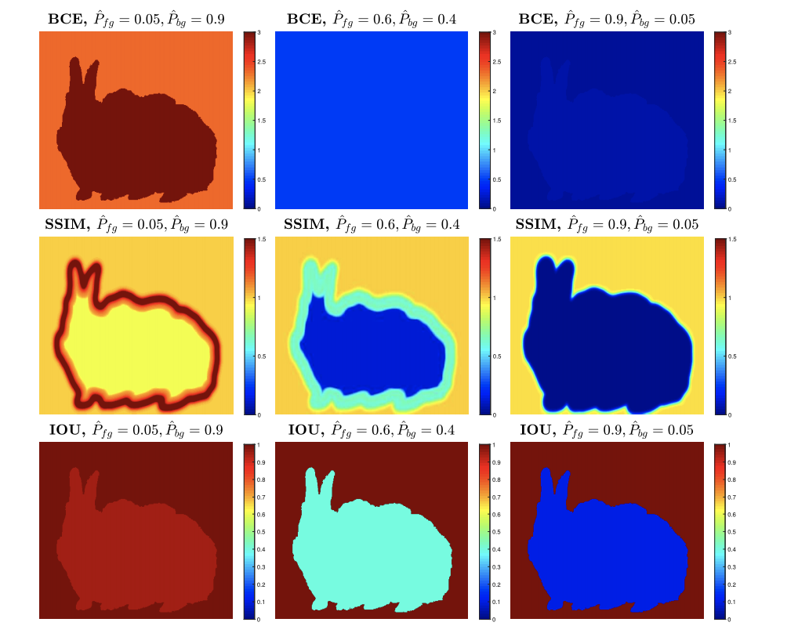

本文中，作者主要试图解决两个问题：一是如何让模型同时理解高级与低级特征，二是如何提高边界分类准确率。而网络结构与这两个问题一一对应，第一部分为Predict Module采用了类似U-net的Encoder-Decoder结构，通过多层间的shortcut connection来融合不同层级的特征；第二部分为Residual Refinement Module，与以往部分迭代式模型不同，本文中残差模块只使用了一次，同样采用了Encoder-Decoder结构，不过结构上与Predict Module相比较为简单。最后，本文最大的创新点在于混合了BCE, SSIM 和 IoU三种损失函数，对像素级、patch级以及全局的预测结果均进行优化，没有显式地采用关注边界的损失函数，但也同时提高了整体和边界的分类准确率。网络结构如下图所示。

本文在网络结构上没有显著的创新点，Predict Module模块部分采用了ResNet-34的权重进行初始化，其余采用xavier初始化法。文章最大的创新点在于新的损失函数。文中选取了Predict Module的后八个特征图及Residual Refinement Module的最终输出来加权计算loss，每个loss包含三部分：1.BCEloss，该损失函数在显著性检测中广泛使用，无介绍必要；2.SSIMloss，其最早在图像质量评估中被提出，在文中被用于评估预测结果和ground truth在每个图像patch上的相似程度，从而加强模型对patch级别特征的学习能力；IoU是目标检测的常用评估手段，不过多介绍，在此被用于在全局层面提供损失函数。三种损失函数的混合使用也加强了模型的多尺度特征学习能力。为突出新的损失函数的显著性，文中也通过热力图展示了各个loss对图像不同区域的敏感程度。

模型在SOD、ECSSD、DUT-ORMON、PASCAL-S、HKU-IS及DUTS-TE上进行了测试，均有较高表现，部分超越了SOTA方法，且在1080ti上处理256*256像素输入时推断速度可达到25fps。